4.7. Image and Spectrum Rendering#
4.7.1. Overview#
When rendering images inside the raytracer geometry an RImage object is calculated.
Compared to a typical colored image, this object has the following advantages:
rescaling the image data to other sizes without distorting or interpolating information
calculating different image modes (sRGB, Hue, Lightness, Irradiance, …)
the image data is available at a higher bit depth than a normal image
smoothing the image without loosing the original data
stores image geometry information (absolute positions) and metadata
guaranteed odd pixel side count, so the center and center axes have a well defined pixel position
Motivation
Case 1: A user rendered a detector image with 100 million rays in 30 minutes. After rendering he notices that choosing a image resolution of 100x100 pixels was too modest. But now his only option is to rerender the image in a higher resolution.
Case 2: After rendering the image has the size 950 x 1028. The user wants to rescale the image to lower noise or because it would be easier to work with. But rescaling to something like 200 x 218 could not be done without interpolating and distorting the image data, which would deviate from the physical reality of the image.
Case 3: A setup with rotational symmetry creates a line and a point focus. Due to the image being rendered in an even resolution of 100 x 100 neither the line nor the point are at the correct pixel position, since they lie at pixel edges. Depending on the numerical precision or behavior of the system the line or focus would be either located in a neighboring pixel or in multiple pixels at once.
Solution
store two images: Internal image with higher resolution and a second image with the approximate desired properties for the user
restrict the pixel sizes and ratios so rescaling can be done by joining bins (= pixels)
enforce odd pixel numbers so center and center axes always get their own pixel/pixel column/pixel row
The pixel sizes for the smaller side are limited to:
>>> ot.RImage.SIZES
[1, 3, 5, 7, 9, 15, 21, 27, 35, 45, 63, 105, 135, 189, 315, 945]
Whereas the larger side is larger by a factor with elements of ot.RImage.SIZES up to:
>>> ot.RImage.MAX_IMAGE_RATIO
5
And therefore values of [1, 3, 5]. For arbitrary side ratios this leads to non-square pixels, but which pose no problem in plotting and processing.
So if the user wants an image with 500 pixels for the smaller side and the exposed area on the detector has a side ratio of 2.63, the internal image is rendered in the resolution 945x2835. This is the case because the nearest side factor to 2.63 is 3 and because 945 is the size for all internally rendered images. From this resolution the image can be scaled to 315x945 189x567 135x405 105x315 63x189 45x135 35x105 27x81 21x63 15x45 9x27 7x21 5x15 3x9 1x3. The user image is then scaled into size 315x945, as it is the nearest to a size of 500.
Rescaling would then be done by joining a group of nine pixels (three in each dimension) to change the resolution of 945x2835 to 315x945.
4.7.2. Image Types#
Internally the RImage objects saves a power and XYZ color space image, from which the following image modes can be generated:
|
Image of power per area, equivalent to an intensity image |
|---|---|
|
Image of luminous power per area |
|
A human vision approximation of the image. Colors outside the gamut are saturation-clipped. Preferred sRGB-Mode for “natural”/”everyday” scenes. |
|
Similar to sRGB (Absolute RI), but instead saturation scaling for all pixels. Preferred mode for scenes with monochromatic sources or highly dispersive optics. |
|
Boolean image showing pixels outside the sRGB gamut |
|
Human vision approximation in greyscale colors. Similar to Illuminance, but with non-linear brightness function. |
|
Measure of the type of color tint (red, orange, yellow, …) |
|
How colorful an area seems compared to a similar illuminated area. |
|
How colorful an area seems compared to its brightness. Quotient of Chroma and Lightness. |
The difference between chroma and saturation is elaborately explained in [1]. Due to subtle differences saturation is often put to use as light property and chroma as property for an illuminated object.
An example for the difference of both sRGB modes is seen in Fig. 6.14.

|
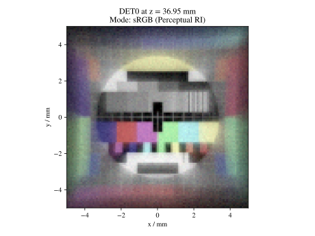 |
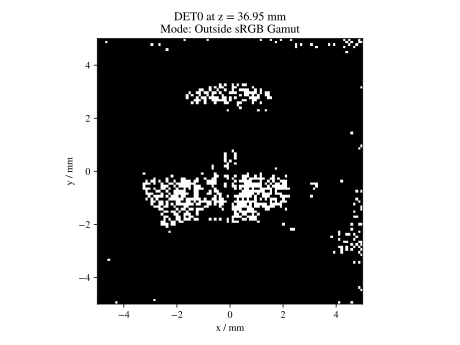 |

|
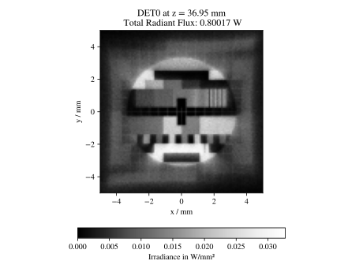 |

|

|
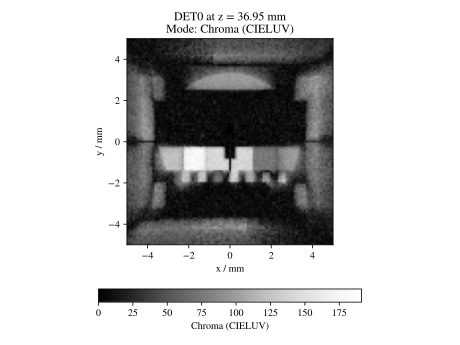 |
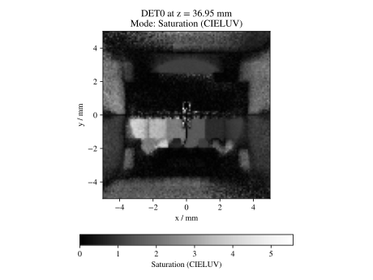 |
{kind=link}
{kind=link}
{kind=link}
{kind=link}
{kind=link}
4.7.3. Sphere Projections#
With a spherical detector surface, there are multiple ways to project it down to a rectangular surface. Note that there is no possible way for a projection, that correctly represents angles, distances and areas. One might now this problem from different map projections.
Below you can find the projection methods implemented in optrace and Wikipedia links for their detailed explanation. Details on the math applied internally are found in the math section in Section 6.3.8.
Available methods are:
|
Perspective projection, sphere surface seen from far away [2] |
|---|---|
|
Conformal projection (preserving local angles and shapes) [3] |
|
Projection keeping the radial direction from a center point equal [4] |
|
Area preserving projection [5] |

|

|

|

|
4.7.4. Resolution Limit Filter#
Unfortunately, optrace does not take wave optics into account when simulating the light path or rendering image intensities. To help in estimating the effect of a resolution limit the RImage class provides a limit parameter. This parameter describes the width of an airy disc and blurs the image with a gaussian filter that is approximately the size of the zeroth order of an airy disc with the same resolution limit.
Note
The limit parameter is only an estimation of how large the impact of a resolution limit on the image is. The simulation neither knows the actual limit nor takes into account higher order maxima or interference of light. This feature should only be used to estimate how far the image quality is from a resolution-limited image or if chromatic dispersion or the focal point width is in the same magnitude as this limit.
To some degree this parameter is also suitable to estimate the effect of different resolution limits.
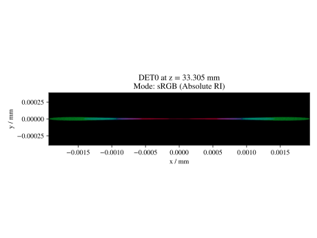 |
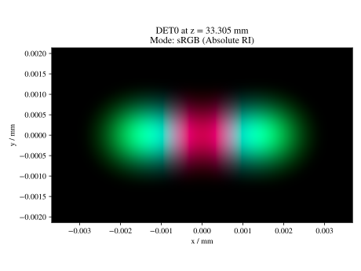 |
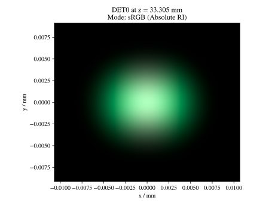 |
{kind=link}
{kind=link}
{kind=link}
4.7.5. Rendering an Image#
Example Geometry
The below snippet generates a geometry with multiple sources and detectors. The actual function is not important, as it is only here to demonstrate image and spectrum rendering.
# make raytracer
RT = ot.Raytracer(outline=[-5, 5, -5, 5, -5, 60], silent=True)
# add Raysources
RSS = ot.CircularSurface(r=1)
RS = ot.RaySource(RSS, divergence="None", spectrum=ot.presets.light_spectrum.FDC,
pos=[0, 0, 0], s=[0, 0, 1], polarization="y")
RT.add(RS)
RSS2 = ot.CircularSurface(r=1)
RS2 = ot.RaySource(RSS2, divergence="None", s=[0, 0, 1], spectrum=ot.presets.light_spectrum.d65,
pos=[0, 1, -3], polarization="Constant", pol_angle=25, power=2)
RT.add(RS2)
# add Lens 1
front = ot.ConicSurface(r=3, R=10, k=-0.444)
back = ot.ConicSurface(r=3, R=-10, k=-7.25)
nL1 = ot.RefractionIndex("Cauchy", coeff=[1.49, 0.00354, 0, 0])
L1 = ot.Lens(front, back, de=0.1, pos=[0, 0, 10], n=nL1)
RT.add(L1)
# add Detector 1
Det = ot.Detector(ot.RectangularSurface(dim=[2, 2]), pos=[0, 0, 0])
RT.add(Det)
# add Detector 2
Det2 = ot.Detector(ot.SphericalSurface(R=-1.1, r=1), pos=[0, 0, 40])
RT.add(Det2)
# trace the geometry
RT.trace(1000000)
Source Image
Rendering a source image is done with the source_image method of the Raytracer class. Note that it expects, that scene has already been traced and rays were calculated.
The function takes a pixel size parameter, that determines the pixel count for the smaller image size.
Note that only image sizes of RImage.SIZES are valid, when different values are specified the nearest values is chosen.
Example for the function call:
img = RT.source_image(389)
This renders an RImage for the first source and returns an RImage.
The following code renders it for the second source (since index counting starts at zero) and additionally provides the resolution limit limit parameter of 3 µm.
img = RT.source_image(389, source_index=1, limit=3)
Detector Image
Calculating a detector_image is done in a similar fashion:
img = RT.detector_image(389)
Compared to source_image you can not only provide a detector_index, but also a source_index, which limit the rendering to the light from this source. By default all sources are used.
img = RT.detector_image(389, detector_index=0, source_index=1)
For spherical surface detectors a projection_method can be chosen. Moreover, the extent of the detector can be limited with the extent parameter, that is provided as [x0, x1, y0, y1] with \(x_0 < x_1, ~ y_0 < y_1\). By default the extent gets adjusted automatically to contain all rays hitting the detector.
As for source_image the limit parameter can also be provided.
img = RT.detector_image(389, detector_index=0, source_index=1, extent=[0, 1, 0, 1], limit=3, projection_method="Orthographic")
4.7.6. Iterative Render#
When tracing, the amount of rays is limited by the system’s available RAM. Many million rays would not fit in the finite working memory. However, some more complicated scenes need a huge amount of rays, especially for low image noise.
For this the function iterative_render exists. It does multiple traces and iteratively adds up the image components to a summed image. In this way there is no upper bound on the ray count. With enough available user time, images can be rendered with many billion rays.
Parameter N_rays provides the overall number of rays for raytracing.
The first returned value of iterative_render is a list of rendered sources, the second a list of rendered detector images.
If the detector position parameter pos is not provided, a single detector image is rendered at the position of the detector specified by detector_index.
RT.iterative_render(N_rays=1000000, detector_index=1)
If pos is provided as coordinate, the detector is moved beforehand.
RT.iterative_render(N_rays=10000, pos=[0, 1, 0], detector_index=1)
If pos is a list, len(pos) detector images are rendered. All other parameters are either automatically
repeated len(pos) times or can be specified as list with the same length as pos.
Exemplary calls:
RT.iterative_render(N_rays=10000, pos=[[0, 1, 0], [2, 2, 10]], detector_index=1, N_px_D=[128, 256])
RT.iterative_render(N_rays=10000, pos=[[0, 1, 0], [2, 2, 10]], detector_index=[0, 1], limit=[None, 2], extent=[None, [-2, 2, -2, 2]])
N_px_S can also be provided as list, note however, that when provided as list, it needs to have the same length as the number of sources.
By default, source images are also rendered. Providing no_sources=True skips source rendering and simply returns an empty list.
Tips for Faster Rendering
With large rendering times, even small speed-up amounts add up significantly:
As mentioned above, source rendering can be skipped with
no_sources=Truewhen not needed. Depending on the complexity of the setup this option can increase performance by 5%.Setting the raytracer option
RT.no_polskips the calculation of the light polarization, note that depending on the geometry the polarization direction can have an influence of the amount of light transmission at different surfaces. It is advised to experiment beforehand, if the parameter seems to have any effect on the image. Depending on the geometryno_pol=Truecan lead to a speed-up of 10-30%.Prefer inbuilt surface types to data or function surfaces
- try to limit the light through the geometry to rays hitting all lenses. For instance:
Moving the color filters to the front of the system avoids the calculation of ray refractions that get absorbed in a later stage.
Orienting the ray direction cone of the source towards the setup, therfore maximizing rays hitting all lenses. See the
arizona_eye_model.pyexample on how this could be done.
4.7.7. Getting an Image by Mode#
Image
As described above, multiple different image modes can be generated. This is done by utilizing the get function of the image and a selected image mode name:
img_array = img.get("Illuminance")
For the sRGB modes there is an additional log parameter, that scales the color brightness logarithmically. However this is done in a different color space.
While the other modes also can be scaled logarithmically, this can be done by the user or the plotting function.
img_array = img.get("sRGB (Perceptual RI)", log=True)
The returned value is a three-dimensional numpy array for sRGB color modes and a two dimensional for all other modes.
Image Cut
An image cut is the profile of a generated image in x- or y-direction. It has the same parameter as the get function, but includes the additional parameters x and y.
If one wants to generate an image cut in y-direction for a fixed x of 0, one can write:
bins, vals = img.cut("Illuminance", x=0)
For a cut in x-direction the following can be used:
bins, vals = img.cut("Illuminance", y=0.25)
As for get there is a log parameter:
bins, vals = img.cut("sRGB (Perceptual RI)", log=True)
The function returns a tuple of the histogram bin edges and the histogram values, both one dimensional numpy arrays. Note that the bin arrays is larger by one element.
4.7.8. Rescaling and Filtering an Image#
As discussed before, internally the RImage data is saved in a higher resolution. After generating such an RImage you can rescale it afterwards. Note that no interpolation takes place, the histogram bins just get joined together without distorting or guessing any information.
Rescaling is done with the rescale function and a size parameter:
img.rescale(400)
The size doesn’t need to be one of RImage.SIZES, but the nearest one of these values gets chosen automatically.
The size should now be:
>>> img.N
315
Which is the nearest value in RImage.SIZES.
The limit parameter can also be changed afterwards, as internally the RImage holds the unfiltered version.
However, after changing the member variable the image needs to be refiltered by the refilter function:
img.limit = 5
img.refilter()
4.7.9. Saving, Loading and Exporting an Image#
Saving
An RImage can be saved on the disk for later use in optrace. In the simplest case saving is done with the following command, that takes a file path as argument:
img.save("RImage_12345")
If the path is invalid, the object is saved under a fallback name in the current directory. If the file already exists, this is also the case. Otherwise you can specify overwrite=True to force an overwrite.
There is an additional parameter save_32bit that lowers the bit depth, loosing some information but saving disk space.
img.save("RImage_12345", save_32bit=True, overwrite=True)
Loading
For loading the object the static method load of the RImage class is used. It takes a path and returns the RImage object.
img = ot.RImage.load("RImage_12345")
Export as PNG
You can also export an image mode as .png file. The function export_png takes a file path, an image mode and a side length as arguments. The size is specified to the smaller side length.
Note that the export resolution (= export image size) and the RImage pixel count (= histogram resolution) differ.
So saving an RImage with pixel side length 5 (RImage.N) with a resolution of size=500 creates a larger image, but not a finer one.
You can therefore parametrize the histogram resolution of the RImage and the export size independently by rescaling the image beforehand.
An exemplary function call could be:
img.export_png("Image_12345_sRGB", "sRGB (Absolute RI)", size=400)
As for the image modes, one can specify the parameters log and flip. And as for the RImage export the parameter overwrite to force an overwrite.
img.export_png("Image_12345_sRGB", "sRGB (Absolute RI)", size=389, log=True, flip=True, overwrite=True)
The image rescaling is done with methods from the Pillow python library. By default, nearest neighbor interpolation is applied if the export resolution is higher than the RImage resolution and bilinear interpolation otherwise.
You can overwrite this behavior with the resample parameter and the method flag from PIL.Image.Resampling
img.export_png(..., resample=PIL.Image.Resampling.NEAREST)
Note
While the RImage has arbitrary, generally non-square pixels, for the export the image is rescaled to have square pixels. However, in many cases there is no exact ratio that matches the side ratio with integer pixel counts. For instance, an image with sides 12.532 x 3.159 mm and a desired export size of 100 pixels for the smaller side leads to an image of 397 x 100 pixels. This matches the ratio approximately, but is still off by 0.29 pixels (around 9.2 µm). Typically this error gets larger the smaller the resolution is.
4.7.10. Image Properties#
Power Properties
Power in W and luminous power in lm are calculated from the following functions:
img.power()
img.luminous_power()
Size Properties
Additionally, there are multiple size related properties available.
The extent provides the corner points of the rectangle encompassing the image with values [x0, x1, y0, y1].
Nx describes the pixel count in x-direction and Ny the count in y-direction. N is the smaller of those two.
Properties sx and sy specify the side lengths of the image in millimeters in its dimensions.
Apx is the pixel area in mm².
>>> img.extent
array([-0.002625, 1.002625, -0.002625, 1.002625])
>>> img.Nx
315
>>> img.sy
1.0052500000000002
>>> img.Apx
1.0184203199798441e-05
4.7.11. Rendering a LightSpectrum#
Rendering a light spectrum is also done on the source or detector surface.
Analogously to rendering a source image, we can render a spectrum with source_spectrum and by providing a source_index parameter (default to zero).
spec = RT.source_spectrum(source_index=1)
For a detector spectrum the detector_spectrum function is applied. It takes a detector_index argument, that also defaults to zero.
spec = RT.detector_spectrum(detector_index=0)
Additionally we can limit the rendering to a source by providing a source_index or limit the detector area by providing the extent parameter, as we did for the detector_image.
spec = RT.detector_spectrum(detector_index=0, source_index=1, extent=[0, 1, 0, 1])
The above methods return an object of type LightSpectrum with spectrum_type="Histogram".
4.7.12. Plotting Image and Spectra#
Spectrum
A rendered spectrum can be plotted with the spectrum_plot function from optrace.plots.
More on plotting spectra is found in Section 4.5.4.
Image
With a RImage object an image plot is created with the function r_image_plot. But first, the plotting namespace needs to be imported:
import optrace.plots as otp
The plotting function takes the RImage as parameter. Next, we need to specify the image mode string, for example:
otp.r_image_plot(img, "Lightness (CIELUV)")
We can use the additional parameter log to scale the image values logarithmically or provide flip=True to rotate the image by 180 degrees. This is useful when the desired image is flipped due to the system imaging. A user defined title is set with the title parameter and we can make the plotting window blocking with block=True.
otp.r_image_plot(img, "Lightness (CIELUV)", title="Title 123", log=True, flip=True, block=False)
Image Cut
For plotting an image cut the analogous function r_image_cut_plot is applied. It takes the same arguments, but needs a cut parameter x or y. These are the same parameters as for the function RImage.cut, so setting a value for x creates a profile in y-direction for the given x value and vice versa.
otp.r_image_cut_plot(img, "Lightness (CIELUV)", x=0)
Supporting all the same parameters as for r_image_plot, the following call is also valid:
otp.r_image_cut_plot(img, "Lightness (CIELUV)", y=0.2, title="Title 123", log=True, flip=True, block=False)

|

|

Fig. 4.28 Exemplary rendered histogram spectrum from the custom_surfaces.py example script.#
4.7.13. Chromaticity Plots#
Usage
In some use cases it is helpful to display the spectrum color or image values inside a chromaticity diagram to see the color distribution. When doing so, the choice between the CIE 1931 xy chromaticity diagram and the CIE 1976 UCS chromaticity diagram must be undertaken. Differences are described in <>.
Depending on your choice the chromaticities_cie_1931 or chromaticities_cie_1976 function is called. In the simplest case it takes an RImage as parameter:
otp.chromaticities_cie_1931(img)
A LightSpectrum can also be provided:
otp.chromaticities_cie_1976(spec)
Or a list of multiple spectra:
otp.chromaticities_cie_1976(ot.presets.light_spectrum.standard)
A user defined title can also be set. The parameter rendering_intent is specified for the conversion of the colors into the sRGB color space, but generally the default value of “Absolute” is suited. block=True interrupts the rest of the program and norm specifies the brightness normalization, explained a few paragraphs below.
A full function call could look like this:
otp.chromaticities_cie_1976(ot.presets.light_spectrum.standard, title="Standard Illuminants",\
block=False, rendering_intent="Perceptual", norm="Largest")

|

|
Norms
Chromaticity norms describe the brightness normalization for the colored diagram background. There are multiple norms available:
Largest: Maximum brightness for this sRGB color. Leads to colors with maximum brightness and saturation.
Sum: Normalize the sRGB such that the sum of all channels equals one. Leads to a diagram with smooth color changes and approximately equal brightness.
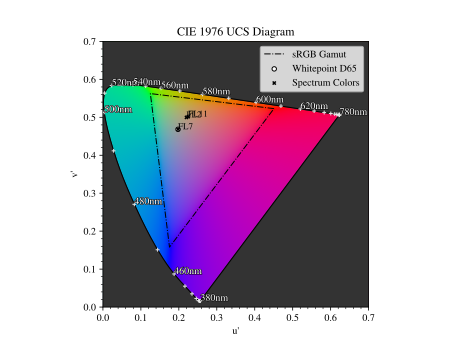 |
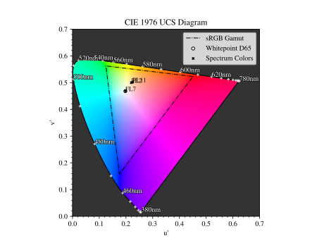 |
{kind=link}
{kind=link}
4.7.14. Image Presets#
Below you can find preset images that can be used for a ray source.

Fig. 4.29 Cell image for microscope examples. Usable as |
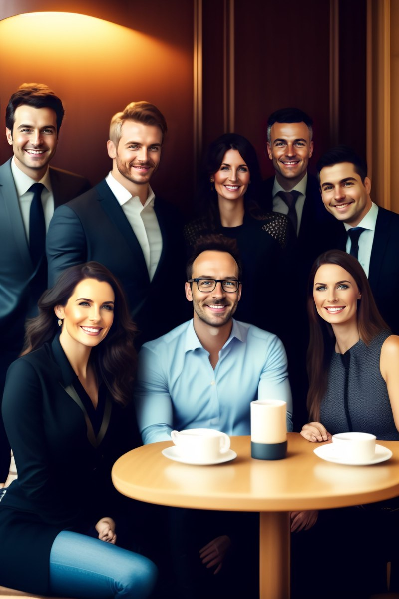 Fig. 4.30 Group photo of managers. Usable as |
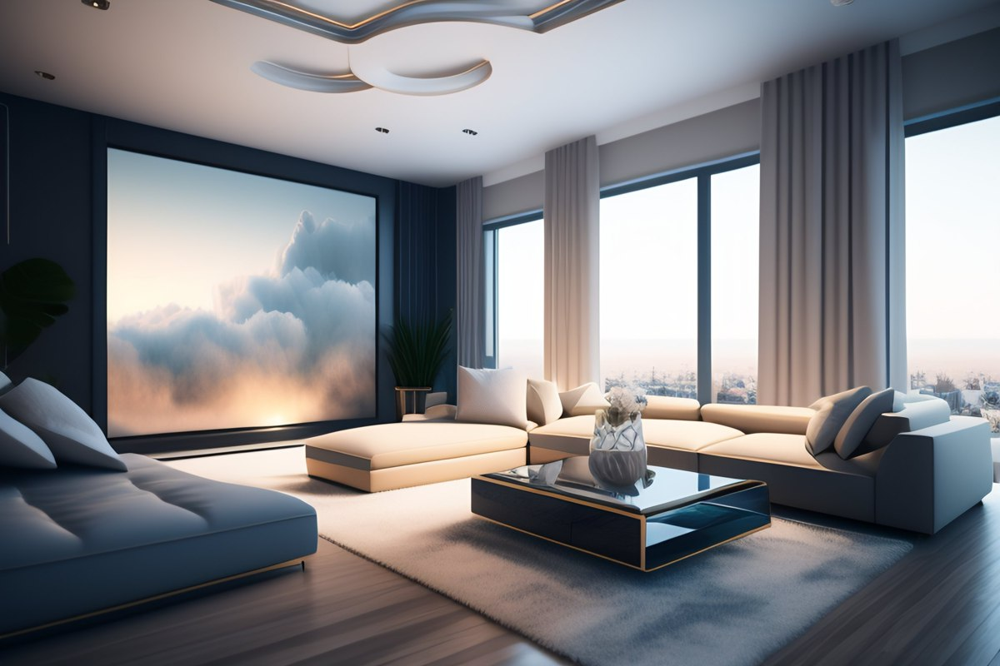 Fig. 4.31 Photo of an interior living room. Usable as |
Fig. 4.32 Photo of an european landscape. Usable as |
{kind=link}
{kind=link}
{kind=link}
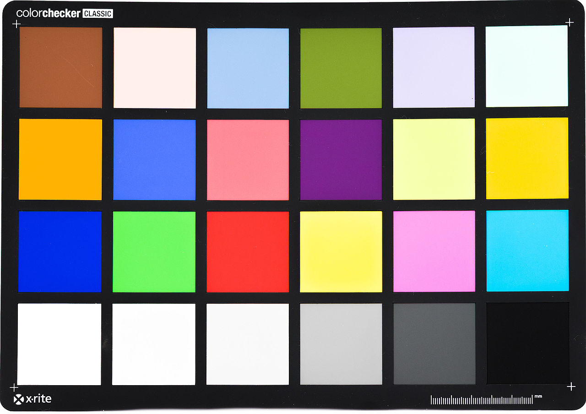 Fig. 4.33 Color checker chart. Public domain image from here.
Usage with |

Fig. 4.34 ETDRS Chart standard. Public Domain Image from here.
Usage with |
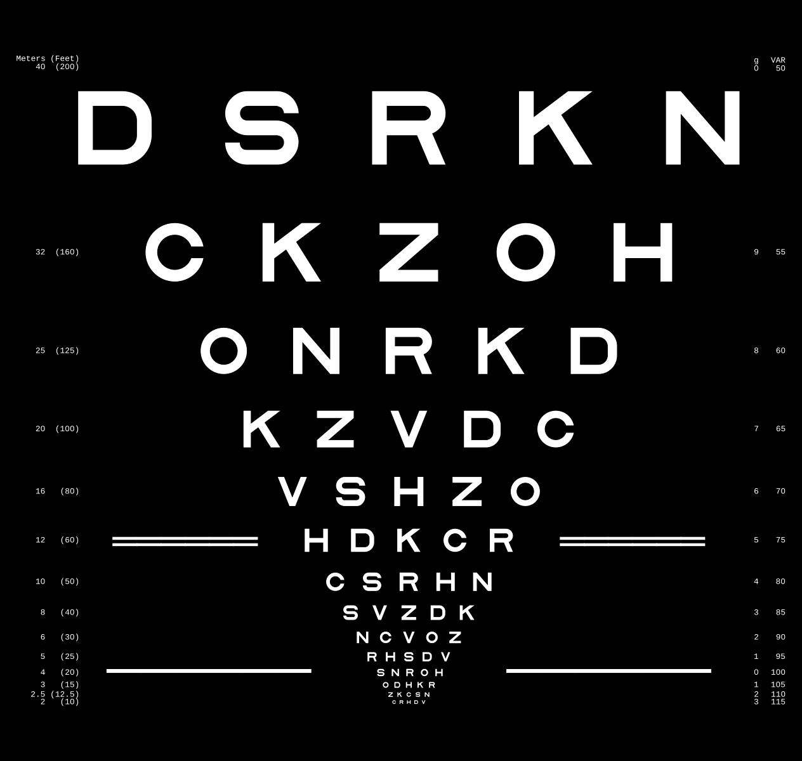 Fig. 4.35 ETDRS Chart standard. Edited version of the ETDRS image.
Usage with |
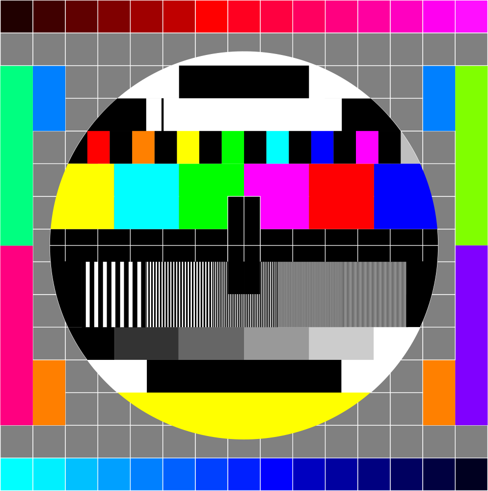 Fig. 4.36 TV test screen. Public Domain Image from here.
Usage with |
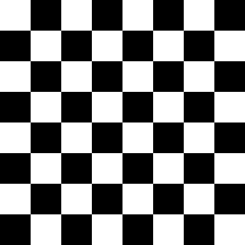 Fig. 4.37 Checkerboard image, 8x8 black and white chess-like board image.
Usage with |
{kind=link}
{kind=link}
{kind=link}
{kind=link}
{kind=link}
{kind=link}
{kind=link}
References